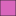
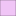

<!doctype html>
<html lang="en">
    <head>
        <meta charset="utf-8">
        <meta http-equiv="X-UA-Compatible" content="IE=edge">
        <meta name="viewport" content="initial-scale=1,user-scalable=no,maximum-scale=1,width=device-width">
        <meta name="mobile-web-app-capable" content="yes">
        <meta name="apple-mobile-web-app-capable" content="yes">
        <link rel="stylesheet" href="css/leaflet.css"><link rel="stylesheet" href="css/L.Control.Locate.min.css">
        <link rel="stylesheet" href="css/qgis2web.css"><link rel="stylesheet" href="css/fontawesome-all.min.css">
        <link rel="stylesheet" href="css/MarkerCluster.css">
        <link rel="stylesheet" href="css/MarkerCluster.Default.css">
        <link rel="stylesheet" href="css/leaflet-measure.css">
        <style>
        html, body, #map {
            width: 100%;
            height: 100%;
            padding: 0;
            margin: 0;
        }
        </style>
        <title></title>
    </head>
    <body>
        <div id="map">
        </div>
        <script src="js/qgis2web_expressions.js"></script>
        <script src="js/leaflet.js"></script><script src="js/L.Control.Locate.min.js"></script>
        <script src="js/leaflet.rotatedMarker.js"></script>
        <script src="js/leaflet.pattern.js"></script>
        <script src="js/leaflet-hash.js"></script>
        <script src="js/Autolinker.min.js"></script>
        <script src="js/rbush.min.js"></script>
        <script src="js/labelgun.min.js"></script>
        <script src="js/labels.js"></script>
        <script src="js/leaflet-measure.js"></script>
        <script src="js/leaflet.markercluster.js"></script>
        <script src="data/Comunas_1.js"></script>
        <script src="data/comuna_17_2.js"></script>
        <script src="data/barrios_zona_estudio_3.js"></script>
        <script src="data/shape_restaurantes_4.js"></script>
        <script>
        var map = L.map('map', {
            zoomControl:true, maxZoom:28, minZoom:1
        }).fitBounds([[3.326429326792228,-76.6976006119997],[3.5004425293837675,-76.36375563576397]]);
        var hash = new L.Hash(map);
        map.attributionControl.setPrefix('<a href="https://github.com/tomchadwin/qgis2web" target="_blank">qgis2web</a> &middot; <a href="https://leafletjs.com" title="A JS library for interactive maps">Leaflet</a> &middot; <a href="https://qgis.org">QGIS</a>');
        L.control.locate({locateOptions: {maxZoom: 19}}).addTo(map);
        var measureControl = new L.Control.Measure({
            position: 'topleft',
            primaryLengthUnit: 'meters',
            secondaryLengthUnit: 'kilometers',
            primaryAreaUnit: 'sqmeters',
            secondaryAreaUnit: 'hectares'
        });
        measureControl.addTo(map);
        document.getElementsByClassName('leaflet-control-measure-toggle')[0]
        .innerHTML = '';
        document.getElementsByClassName('leaflet-control-measure-toggle')[0]
        .className += ' fas fa-ruler';
        var bounds_group = new L.featureGroup([]);
        function setBounds() {
        }
        var layer_OpenStreetMapStandard_0 = L.tileLayer('http://a.tile.openstreetmap.org/{z}/{x}/{y}.png', {
            opacity: 1.0,
            attribution: '',
            minZoom: 1,
            maxZoom: 28,
            minNativeZoom: 0,
            maxNativeZoom: 18
        });
        layer_OpenStreetMapStandard_0;
        map.addLayer(layer_OpenStreetMapStandard_0);
        function pop_Comunas_1(feature, layer) {
            var popupContent = '<table>\
                    <tr>\
                        <td colspan="2">' + (feature.properties['comuna'] !== null ? Autolinker.link(feature.properties['comuna'].toLocaleString(), {truncate: {length: 30, location: 'smart'}}) : '') + '</td>\
                    </tr>\
                    <tr>\
                        <td colspan="2">' + (feature.properties['nombre'] !== null ? Autolinker.link(feature.properties['nombre'].toLocaleString(), {truncate: {length: 30, location: 'smart'}}) : '') + '</td>\
                    </tr>\
                    <tr>\
                        <td colspan="2">' + (feature.properties['area'] !== null ? Autolinker.link(feature.properties['area'].toLocaleString(), {truncate: {length: 30, location: 'smart'}}) : '') + '</td>\
                    </tr>\
                    <tr>\
                        <td colspan="2">' + (feature.properties['perimetro'] !== null ? Autolinker.link(feature.properties['perimetro'].toLocaleString(), {truncate: {length: 30, location: 'smart'}}) : '') + '</td>\
                    </tr>\
                </table>';
            layer.bindPopup(popupContent, {maxHeight: 400});
        }

        function style_Comunas_1_0() {
            return {
                pane: 'pane_Comunas_1',
                opacity: 1,
                color: 'rgba(35,35,35,1.0)',
                dashArray: '',
                lineCap: 'butt',
                lineJoin: 'miter',
                weight: 1.0, 
                fill: true,
                fillOpacity: 1,
                fillColor: 'rgba(168,88,180,1.0)',
                interactive: true,
            }
        }
        map.createPane('pane_Comunas_1');
        map.getPane('pane_Comunas_1').style.zIndex = 401;
        map.getPane('pane_Comunas_1').style['mix-blend-mode'] = 'normal';
        var layer_Comunas_1 = new L.geoJson(json_Comunas_1, {
            attribution: '',
            interactive: true,
            dataVar: 'json_Comunas_1',
            layerName: 'layer_Comunas_1',
            pane: 'pane_Comunas_1',
            onEachFeature: pop_Comunas_1,
            style: style_Comunas_1_0,
        });
        bounds_group.addLayer(layer_Comunas_1);
        map.addLayer(layer_Comunas_1);
        function pop_comuna_17_2(feature, layer) {
            var popupContent = '<table>\
                    <tr>\
                        <td colspan="2">' + (feature.properties['comuna'] !== null ? Autolinker.link(feature.properties['comuna'].toLocaleString(), {truncate: {length: 30, location: 'smart'}}) : '') + '</td>\
                    </tr>\
                    <tr>\
                        <td colspan="2">' + (feature.properties['nombre'] !== null ? Autolinker.link(feature.properties['nombre'].toLocaleString(), {truncate: {length: 30, location: 'smart'}}) : '') + '</td>\
                    </tr>\
                    <tr>\
                        <td colspan="2">' + (feature.properties['area'] !== null ? Autolinker.link(feature.properties['area'].toLocaleString(), {truncate: {length: 30, location: 'smart'}}) : '') + '</td>\
                    </tr>\
                    <tr>\
                        <td colspan="2">' + (feature.properties['perimetro'] !== null ? Autolinker.link(feature.properties['perimetro'].toLocaleString(), {truncate: {length: 30, location: 'smart'}}) : '') + '</td>\
                    </tr>\
                </table>';
            layer.bindPopup(popupContent, {maxHeight: 400});
        }

        function style_comuna_17_2_0() {
            return {
                pane: 'pane_comuna_17_2',
                opacity: 1,
                color: 'rgba(35,35,35,1.0)',
                dashArray: '',
                lineCap: 'butt',
                lineJoin: 'miter',
                weight: 1.0, 
                fill: true,
                fillOpacity: 1,
                fillColor: 'rgba(211,88,230,1.0)',
                interactive: false,
            }
        }
        map.createPane('pane_comuna_17_2');
        map.getPane('pane_comuna_17_2').style.zIndex = 402;
        map.getPane('pane_comuna_17_2').style['mix-blend-mode'] = 'normal';
        var layer_comuna_17_2 = new L.geoJson(json_comuna_17_2, {
            attribution: '',
            interactive: false,
            dataVar: 'json_comuna_17_2',
            layerName: 'layer_comuna_17_2',
            pane: 'pane_comuna_17_2',
            onEachFeature: pop_comuna_17_2,
            style: style_comuna_17_2_0,
        });
        bounds_group.addLayer(layer_comuna_17_2);
        map.addLayer(layer_comuna_17_2);
        function pop_barrios_zona_estudio_3(feature, layer) {
            var popupContent = '<table>\
                    <tr>\
                        <td colspan="2">' + (feature.properties['id_barrio'] !== null ? Autolinker.link(feature.properties['id_barrio'].toLocaleString(), {truncate: {length: 30, location: 'smart'}}) : '') + '</td>\
                    </tr>\
                    <tr>\
                        <td colspan="2"><strong>barrio</strong><br />' + (feature.properties['barrio'] !== null ? Autolinker.link(feature.properties['barrio'].toLocaleString(), {truncate: {length: 30, location: 'smart'}}) : '') + '</td>\
                    </tr>\
                    <tr>\
                        <td colspan="2">' + (feature.properties['area'] !== null ? Autolinker.link(feature.properties['area'].toLocaleString(), {truncate: {length: 30, location: 'smart'}}) : '') + '</td>\
                    </tr>\
                    <tr>\
                        <td colspan="2">' + (feature.properties['perimetro'] !== null ? Autolinker.link(feature.properties['perimetro'].toLocaleString(), {truncate: {length: 30, location: 'smart'}}) : '') + '</td>\
                    </tr>\
                </table>';
            layer.bindPopup(popupContent, {maxHeight: 400});
        }

        function style_barrios_zona_estudio_3_0() {
            return {
                pane: 'pane_barrios_zona_estudio_3',
                opacity: 1,
                color: 'rgba(35,35,35,1.0)',
                dashArray: '',
                lineCap: 'butt',
                lineJoin: 'miter',
                weight: 1.0, 
                fill: true,
                fillOpacity: 1,
                fillColor: 'rgba(207,61,171,1.0)',
                interactive: true,
            }
        }
        map.createPane('pane_barrios_zona_estudio_3');
        map.getPane('pane_barrios_zona_estudio_3').style.zIndex = 403;
        map.getPane('pane_barrios_zona_estudio_3').style['mix-blend-mode'] = 'normal';
        var layer_barrios_zona_estudio_3 = new L.geoJson(json_barrios_zona_estudio_3, {
            attribution: '',
            interactive: true,
            dataVar: 'json_barrios_zona_estudio_3',
            layerName: 'layer_barrios_zona_estudio_3',
            pane: 'pane_barrios_zona_estudio_3',
            onEachFeature: pop_barrios_zona_estudio_3,
            style: style_barrios_zona_estudio_3_0,
        });
        bounds_group.addLayer(layer_barrios_zona_estudio_3);
        map.addLayer(layer_barrios_zona_estudio_3);
        function pop_shape_restaurantes_4(feature, layer) {
            var popupContent = '<table>\
                    <tr>\
                        <td colspan="2">' + (feature.properties['id'] !== null ? Autolinker.link(feature.properties['id'].toLocaleString(), {truncate: {length: 30, location: 'smart'}}) : '') + '</td>\
                    </tr>\
                    <tr>\
                        <td colspan="2"><strong>nombre</strong><br />' + (feature.properties['nombre'] !== null ? Autolinker.link(feature.properties['nombre'].toLocaleString(), {truncate: {length: 30, location: 'smart'}}) : '') + '</td>\
                    </tr>\
                    <tr>\
                        <td colspan="2">' + (feature.properties['tipo_comid'] !== null ? Autolinker.link(feature.properties['tipo_comid'].toLocaleString(), {truncate: {length: 30, location: 'smart'}}) : '') + '</td>\
                    </tr>\
                    <tr>\
                        <td colspan="2">' + (feature.properties['direccion'] !== null ? Autolinker.link(feature.properties['direccion'].toLocaleString(), {truncate: {length: 30, location: 'smart'}}) : '') + '</td>\
                    </tr>\
                    <tr>\
                        <td colspan="2">' + (feature.properties['redes_soci'] !== null ? Autolinker.link(feature.properties['redes_soci'].toLocaleString(), {truncate: {length: 30, location: 'smart'}}) : '') + '</td>\
                    </tr>\
                    <tr>\
                        <td colspan="2"><strong>horario_at</strong><br />' + (feature.properties['horario_at'] !== null ? Autolinker.link(feature.properties['horario_at'].toLocaleString(), {truncate: {length: 30, location: 'smart'}}) : '') + '</td>\
                    </tr>\
                </table>';
            layer.bindPopup(popupContent, {maxHeight: 400});
        }

        function style_shape_restaurantes_4_0() {
            return {
                pane: 'pane_shape_restaurantes_4',
                radius: 4.0,
                opacity: 1,
                color: 'rgba(35,35,35,1.0)',
                dashArray: '',
                lineCap: 'butt',
                lineJoin: 'miter',
                weight: 1,
                fill: true,
                fillOpacity: 1,
                fillColor: 'rgba(55,183,211,1.0)',
                interactive: true,
            }
        }
        map.createPane('pane_shape_restaurantes_4');
        map.getPane('pane_shape_restaurantes_4').style.zIndex = 404;
        map.getPane('pane_shape_restaurantes_4').style['mix-blend-mode'] = 'normal';
        var layer_shape_restaurantes_4 = new L.geoJson(json_shape_restaurantes_4, {
            attribution: '',
            interactive: true,
            dataVar: 'json_shape_restaurantes_4',
            layerName: 'layer_shape_restaurantes_4',
            pane: 'pane_shape_restaurantes_4',
            onEachFeature: pop_shape_restaurantes_4,
            pointToLayer: function (feature, latlng) {
                var context = {
                    feature: feature,
                    variables: {}
                };
                return L.circleMarker(latlng, style_shape_restaurantes_4_0(feature));
            },
        });
        var cluster_shape_restaurantes_4 = new L.MarkerClusterGroup({showCoverageOnHover: false,
            spiderfyDistanceMultiplier: 2});
        cluster_shape_restaurantes_4.addLayer(layer_shape_restaurantes_4);

        bounds_group.addLayer(layer_shape_restaurantes_4);
        cluster_shape_restaurantes_4.addTo(map);
        var baseMaps = {};
        L.control.layers(baseMaps,{' shape_restaurantes': cluster_shape_restaurantes_4,' barrios_zona_estudio': layer_barrios_zona_estudio_3,' comuna_17': layer_comuna_17_2,' Comunas': layer_Comunas_1,"OpenStreetMap Standard": layer_OpenStreetMapStandard_0,}).addTo(map);
        setBounds();
        resetLabels([layer_comuna_17_2]);
        map.on("zoomend", function(){
            resetLabels([layer_comuna_17_2]);
        });
        map.on("layeradd", function(){
            resetLabels([layer_comuna_17_2]);
        });
        map.on("layerremove", function(){
            resetLabels([layer_comuna_17_2]);
        });
        </script>
    </body>
</html>
